전자계산기조직응용기사 (2022-03-05 기출문제)
1과목: 전자계산기 프로그래밍
1. 다음 C언어 프로그램이 실행되었을 때, 실행 결과는?
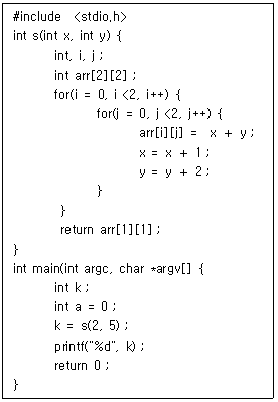
- 7
- 10
- 13
- 16
(정답률: 70%)

2. C언어에서 다음의 배열 선언에 의해 사용할 수 있는 배열요소는?
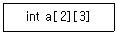
- a[2][1]
- a[0][3]
- a[1][2]
- a[2][3]
(정답률: 84%)
3. 동일한 자료형의 변수를 메모리에 연속적으로 할당하여 일정한 간격으로 주소를 갖도록 하는 것은?
- 배열
- 포인터
- 구조체
- 공용체
(정답률: 100%)
4. C언어에서 서로 다른 자료형의 변수들을 하나로 묶어서 사용하는 것은?
- 배열
- 포인터
- 구조체
- 문자열
(정답률: 90%)
5. 서브루틴에서 자신을 호출한 곳으로 복귀시키는 어셈블리어 명령은?
- CALL
- LOOP
- NOP
- RET
(정답률: 알수없음)
6. 인간이 의도하는 프로그래밍 언어로 작성된 프로그램을 컴퓨터가 이해하도록 기계어로 변환하는 것은?
- 버퍼
- 스풀러
- 컴파일러
- 컨버터
(정답률: 100%)
7. C언어에서 자료형의 크기를 구하는 것은?
- checking
- length
- sizeof
- type
(정답률: 80%)
8. C언어에서 다음이 설명하는 것은?
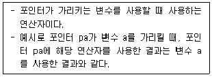
- 주소 연산자(&)
- 간접참조 연산자(*)
- 단항 연산자(－)
- 증가 연산자(＋)
(정답률: 90%)
9. 객체지향 기법에서 어떤 클래스에 속하는 구체적인 객체를 의미하는 것은?
- 정보 은닉
- 캡슐화
- 통합화
- 인스턴스
(정답률: 100%)
10. 객체지향 언어 중 JAVA의 일반적인 특징이 아닌 것은?
- Garbage Collection을 통해 메모리를 관리할 수 있다.
- 분산처리를 지원한다.
- 운영체제에 종속적이다.
- 멀티쓰레드와 동적로딩을 지원한다.
(정답률: 91%)
11. C언어 명령문 중 "do ~ while" 문에 대한 설명으로 틀린 것은?
- 명령의 조건이 거짓일 때 Loop를 반복 처리 한다.
- 명령의 조건이 거짓일 때도 최소한 한번은 처리 한다.
- while 문과 유사하지만 약간의 차이가 있다.
- 제일 마지막 문장에；기호가 필요하다.
(정답률: 알수없음)
12. C언어의 특징으로 옳은 것을 모두 나열한 것은?
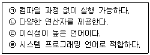
- ㉠, ㉢
- ㉠, ㉡, ㉢
- ㉠, ㉣
- ㉡, ㉢, ㉣
(정답률: 91%)
13. C언어의 포인터에 관한 설명 중 틀린 것은?
- 어떤 변수의 주소를 저장한다.
- 포인터는 초기 선언이 불가능하다.
- 포인터 변수가 주소를 저장하려면 변수의 주소를 알기 위해서 & 연산자를 사용하여 해당 변수의 시작 주소를 반환한다.
- 포인터에 * 연산을 하면 그 포인터가 가리키고 있는 변수(또는 배열변수)의 값을 알려준다.
(정답률: 85%)
14. 어셈블리어에 대한 설명으로 틀린 것은?
- 기억장치의 제어가 가능하다.
- 오류 검증이 용이하며 호환성이 우수하다.
- 기호를 정하여 명령어와 데이터를 기술한다.
- 최적의 실행시간을 고려한 프로그램 작성이 가능하다.
(정답률: 80%)
15. 객체지향의 기본 개념 중 객체가 메시지를 받아 실행해야 할 객체의 구체적인 연산을 의미하는 것은?
- 라이브러리
- 메소드
- 서브루틴
- 자식 클래스
(정답률: 100%)
16. 다음 C언어 프로그램이 실행되었을 때, 실행 결과는?
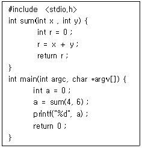
- 2
- 4
- 6
- 10
(정답률: 92%)
17. 다음 C언어 프로그램이 실행되었을 때, 실행 결과는?
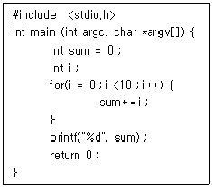
- 36
- 45
- 55
- 66
(정답률: 100%)
18. PC 어셈블리 명령에서 데이터를 맞교환하는 명령으로 옳은 것은?
- XCHG
- LAHF
- SAHF
- MOV
(정답률: 알수없음)
19. 객체지향 개념에서 다음 설명에 해당하는 것은?
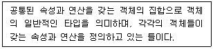
- 메시지
- 클래스
- 프레임
- 추상화
(정답률: 90%)
20. C언어에서 문자열 출력 함수는?
- gets()
- puts()
- getchar()
- putchar()
(정답률: 50%)
2과목: 자료구조 및 데이터통신
21. HDLC(High-level Data Link Control) 프로토콜에 대한 설명으로 틀린 것은?
- HDLC의 구성요소 중 국(Station)은 개방 시스템에서 HDLC 절차를 실행하는 부분이며 데이터 제어 명령을 전송하고 응답한다.
- 비트 지향 프로토콜로 비교적 신뢰성이 높다.
- 데이터 전송 모드에는 NRM, ABM, ARM이 있다.
- 전송 제어를 위해 전송제어문자(STX, ETX, ACK 등)를 사용한다.
(정답률: 알수없음)
22. 채널 대역폭이 150kHz이고 S/N 비가 15일 때 채널용량(kbps)은? (단, S : 신호, N : 잡음)
- 150
- 300
- 600
- 750
(정답률: 72%)
23. VLAN의 종류가 아닌 것은?
- 프로토콜 기반 VLAN
- Node 기반 VLAN
- 네트워크 주소(IP) 기반 VLAN
- MAC 기반 VLAN
(정답률: 알수없음)
24. 정보 전송방식에서 error 제어를 위한 검출 방식이 아닌 것은?
- Parity Code
- Hamming Code
- Cyclic Redundancy Check
- ENQ(enquiry)
(정답률: 93%)
25. 데이터 변조속도가 3600baud이고, 쿼드비트(Quad bit)를 사용하는 경우 전송속도(bps)는?
- 14400
- 10800
- 9600
- 7200
(정답률: 84%)
26. 회선 교환망에 대한 설명으로 옳은 것은?
- 일반적으로 전송속도 및 코드변환이 가능하다.
- 전송 대역폭 사용이 가변적이다.
- 물리적인 통신경로가 통신 종료 시까지 구성된다.
- 실시간 대화용에 적합하지 않으며, 소량의 전송에 효율적이다
(정답률: 75%)
27. 다음 설명에 부합하는 라우팅 프로토콜은?
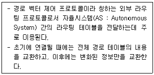
- BGP(Border Gateway Protocol)
- RIP(Routing Information Protocol)
- OSPF(Open Shortest Path First)
- EGP(Exterior Gateway Protocol)
(정답률: 알수없음)
28. 전진에러수정(FEC) 방식에 대한 설명으로 것은?
- ARQ 방식과 달리 수신 측에서 오류가 있음을 발견하면 오류 검출뿐만 아니라 수정도 가능하다.
- ARQ에 비해 연속적인 데이터 전송이 가능하고, 역채널을 사용하지 않을 수 있다.
- 자기 정정 방식이라고도 한다.
- ARQ 시스템보다 잉여 비트의 수가 적어서 시스템 신뢰성이 높다.
(정답률: 34%)
29. 다음 LAN의 네트워크 토폴로지는 어떤 형인가?
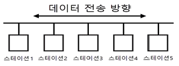
- 버스형
- 성형
- 링형
- 그물형
(정답률: 85%)
30. 호스트의 물리적 주소로부터 IP 주소를 구할 수 있도록 하는 프로토콜은?
- ICMP
- RARP
- IGMP
- FTP
(정답률: 90%)
31. 다음과 같은 이진 트리의 Preorder 운행 결과는?
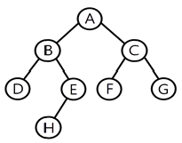
- A B D E H C F G
- A B C D E F G H
- A H E B F G C D
- D B H E A F C G
(정답률: 100%)
32. 다음과 같은 특징을 가지는 파일 구조는?
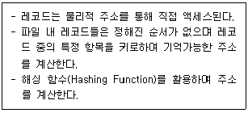
- 순차 파일
- 간접 파일
- 직접 파일
- 2차 파일
(정답률: 80%)
33. 자료구조 중 스택의 응용 분야와 거리가 먼 것은?
- 인터럽트의 처리
- UNIX의 디렉터리 구조
- 부프로그램 호출시 복귀주소 저장
- 함수 호출 순서제어
(정답률: 67%)
34. 3단계 데이터베이스의 구조 중 물리적인 저장 장치의 관점에서 바라보는 단계로 디스크나 테이프 같은 저장 장치의 관점에서 이해하고 표현하는 것은?
- 내부 스키마
- 연결 스키마
- 외부 스키마
- 개념 스키마
(정답률: 67%)
35. 다음 트리(Tree)의 차수(Degree)는?
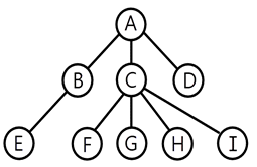
- 1
- 2
- 3
- 4
(정답률: 80%)
36. 다음 설명에 부합하는 파일 구조는?
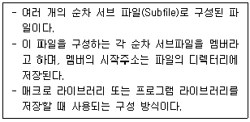
- 순차 파일(Sequential File)
- 인덱스 파일(Index File)
- 직접 파일(Direct File)
- 분할된 파일(Partitioned File)
(정답률: 40%)
37. 선형 자료구조로만 짝지어진 것은?
- 그래프, 스택, 큐, 트리
- 스택, 큐
- 그래프, 큐, 트리
- 그래프, 스택, 트리
(정답률: 91%)
38. 해싱 함수의 값을 구한 결과 두 개의 키 값이 동일한 값을 가지는 경우를 뜻하는 것은?
- Clustering
- Overflow
- Relation
- Collision
(정답률: 100%)
39. 다음 자료에 대하여 버블 정렬을 이용하여 오름차순으로 정렬할 경우 1회전 후의 결과는?
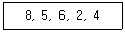
- 4, 2, 5, 6, 8
- 2, 4, 5, 6, 8
- 5, 6, 2, 4, 8
- 5, 2, 4, 6, 8
(정답률: 91%)
40. DBMS의 필수 기능이 아닌 것은?
- 데이터 조작
- 데이터 정의
- 데이터 변경
- 데이터 제어
(정답률: 90%)
3과목: 전자계산기구조
41. 1011인 매크로 동작(Macro-operation)을 0101100인 마이크로 명령어(micro-instruction) 주소로 변환하고자 할 때 사용되는 기법을 무엇이라 하는가?
- Carry-look-ahead
- time-sharing
- multiprogramming
- mapping
(정답률: 55%)
42. 산술논리 연산장치(ALU)의 기능은?
- OP코드 번역
- 시프트 연산
- 제어신호 생성
- 어드레스 버스 제어
(정답률: 알수없음)
43. 고속의 입·출력 장치에 사용되는 데이터 전송 방식은?
- 데이터 채널
- I/O 채널
- selector 채널
- multiplexer 채널
(정답률: 알수없음)
44. 명령어 인출 단계(fetch cycle)에 관여하지 않는 레지스터는?
- PC
- MBR
- MAR
- AC
(정답률: 59%)
45. 병렬처리의 문제점이 아닌 것은?
- 동기화
- 스케줄링
- 블록지정
- 분할의 문제
(정답률: 알수없음)
46. CPU가 어떤 명령과 다음 명령을 수행하는 사이를 이용하여 하나의 데이터 워드를 직접 전송하는 DMA 방식을 무엇이라고 하는가?
- cycle stealing
- word stealing
- cycle transfer
- word transfer
(정답률: 알수없음)
47. 소프트웨어에 의한 인터럽트 처리의 우선 순위 체제가 가진 특성으로 가장 거리가 먼 것은?
- 융통성이 있다.
- 경제적이다.
- 정보량이 매우 적은 시스템에 적합하다.
- 반응속도가 느리다.
(정답률: 알수없음)
48. 전체 기억장치 액세스 횟수가 50이고, 원하는 데이터가 캐시에 있는 횟수가 45라고 할 때, 캐시 실패율(miss ratio)은?
- 0.1
- 0.2
- 0.8
- 0.9
(정답률: 90%)
49. BCD 코드에서 사용하지 않는 2진수는?
- 1010
- 0001
- 1001
- 0101
(정답률: 67%)
50. 32비트 레지스터 16개가 있을 때, 레지스터 간에 직접 병렬 전송 한다면 몇 개의 선이 필요한가?
- 7600
- 7620
- 7680
- 7699
(정답률: 알수없음)
51. 메가플롭스(MFLOPS)에 대하여 가장 잘 설명한 것은?
- 1클록 펄스 간에 실행되는 부동소수점 연산의 수를 10만을 단위로 하여 나타낸 수
- 1클록 펄스 간에 실행되는 고정소수점 연산의 수를 10만을 단위로 하여 나타낸 수
- 1초 간에 실행되는 부동소수점 연산의 수를 100만을 단위로 하여 나타낸 수
- 1초 간에 실행되는 고정소수점 연산의 수를 100만을 단위로 하여 나타낸 수
(정답률: 75%)
52. 아래 설명에 해당되는 연산은? (단, Z, X는 피연산자, Y는 연산결과)
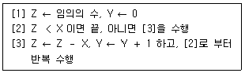
- 덧셈
- 뺄셈
- 곱셈
- 나눗셈
(정답률: 73%)
53. 일반적인 컴퓨터와 달리 명령어를 실행할 때 실행할 명령어의 순서와 상관없이 단지 피연산자가 준비되기만 하면 수행되어 PC가 필요 없는 컴퓨터 구조는?
- 배열 처리기(array processor)
- 시스톨릭 처리기(systolic processor)
- 파이프라인 처리기(pipeline processor)
- 데이터 흐름형 컴퓨터(date flow computer)
(정답률: 알수없음)
54. 다음 중 정수의 표현 방법으로 틀린 것은? (단, 8비트로 표시한다.)
- 1의 보수 표현 －126 : 1 0000001
- 2의 보수 표현 －126 : 1 0000011
- 부호와의 절대치 표현 ＋126 : 0 1111110
- 부호와 절대치 표현 －126 : 1 1111110
(정답률: 46%)
55. 연관 메모리(associative memory)의 특징이 아닌 것은?
- 주소 매핑
- 내용 지정 메모리(CAM)
- 메모리에 저장된 내용으로 접근
- 하드웨어 비용 증가
(정답률: 20%)
56. 캐시 메모리 접근 시간이 100ns, 주기억장치 접근 시간이 1000ns이고, 캐시 적중률이 0.9라고 할 때 평균 메모리 접근 시간에 가장 가까운 값은?
- 100ns
- 200ns
- 1000ns
- 2000ns
(정답률: 59%)
57. JK 플립플롭에서 Jn = 1, Kn = 0일 때 Qn＋1의 출력 상태로 옳은 것은?
- Qn
- 0
- 1
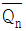
(정답률: 73%)
58. Solid State Drive(SSD)의 메모리 셀 타입 중 2비트를 저장할 수 있는 것은?
- SLC
- MLC
- TLC
- QLC
(정답률: 28%)
59. 중앙처리장치의 명령어 사이클이 아닌 것은?
- Fetch Cycle
- Execute Cycle
- Indirect Cycle
- Branch Cycle
(정답률: 70%)
60. 다음 회로의 명칭은?
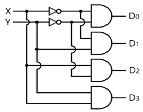
- decoder
- multiplexer
- encoder
- shifter
(정답률: 80%)
4과목: 운영체제
61. UNIX에 대한 설명으로 틀린 것은?
- 상당 부분 C언어를 사용하여 작성되었으며, 이식성이 우수하다.
- 사용자는 하나 이상의 작업을 백그라운드에서 수행할 수 있어 여러 개의 작업을 병행 처리할 수 있다.
- 쉘(shell)은 프로세스 관리, 기억장치 관리, 입출력 관리 등의 기능을 수행한다.
- 두 사람 이상의 사용자가 동시에 시스템을 사용할 수 있어 정보와 유틸리티들을 공유하는 편리한 작업 환경을 제공한다.
(정답률: 67%)
62. 가상주소와 물리주소의 대응 관계로 가상주소로부터 물리주소를 찾아내는 것을 무엇이라 하는가?
- 스케줄링(scheduling)
- 매핑(mapping)
- 버퍼링(buffering)
- 스왑-인(swap in)
(정답률: 알수없음)
63. 파일 시스템의 일반적인 기능이 아닌 것은?
- 파일 저장, 참조, 제거 및 보호 기능을 제공한다.
- 저장된 데이터에 판독, 기록, 실행 등 여러 종류의 접근 제어 방법을 제공한다.
- 백업 및 손상된 데이터를 복구할 수 있는 복구기능을 제공한다.
- 프로그램과 하드웨어 사이의 인터페이스 기능을 직접 제공한다.
(정답률: 알수없음)
64. UNIX 시스템에서 파일 보호를 위한 그룹별 제어 비트가 다음과 같을 때, 각 기호와 의미의 연결이 옳게 연결된 것은?
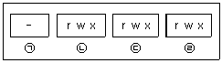
- ㉠ 파일 경로
- ㉡ 그룹 사용자
- ㉢ 소유자
- ㉣ 기타 사용자
(정답률: 알수없음)
65. 운영체제의 발달과정을 순서대로 옳게 나열한 것은?
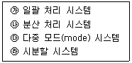
- ㉮→㉱→㉰→㉯
- ㉰→㉯→㉱→㉮
- ㉮→㉰→㉱→㉯
- ㉰→㉱→㉯→㉮
(정답률: 알수없음)
66. 3개의 페이지 프레임(Frame)을 가진 기억장치에서 페이지 요청을 다음과 같은 페이지 번호 순으로 요청했을 때 교체 알고리즘으로 FIFO 방법을 사용한다면 몇 번의 페이지 부재(Fault)가 발생하는가? (단, 현재 기억장치는 모두 비어 있다고 가정한다.)
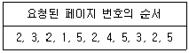
- 7번
- 8번
- 9번
- 10번
(정답률: 59%)
67. 프로세스의 상태를 신규, 준비, 실행, 대기, 종료의 5가지로 구분할 때, 현재 실행상태에 있는 프로세스가 입·출력 사건으로 기다려야 하는 상황이 발생할 경우 이후 프로세스의 상태로 옳은 것은?
- 준비
- 실행
- 대기
- 종료
(정답률: 알수없음)
68. 프로세스 상태 변화 중에서 CPU 스케줄링이 필요한 부분은?
- 보류 → 준비
- 실행 → 종료
- 대기 → 준비
- 준비 → 실행
(정답률: 59%)
69. 프로세스 내에서의 작업 단위로서 시스템의 여러 자원을 할당받아 실행하는 프로그램의 단위를 의미하는 것은?
- Thread
- Working Set
- Semaphore
- Locality
(정답률: 82%)
70. 페이지 부재가 너무 자주 일어나 프로세스가 실행에 보내는 시간보다 페이지 교체에 보내는 시간이 더 많은 상황을 의미하는 것은?
- 스풀링(Spooling)
- 스래싱(Thrashing)
- 페이징(Paging)
- 교착상태(Deadlock)
(정답률: 70%)
71. 분산시스템의 투명성(transparency)에 관한 설명으로 틀린 것은?
- 위치 투명성은 하드웨어와 소프트웨어의 물리적 위치를 사용자가 알 필요가 없다.
- 이주 투명성은 자원들이 한 곳에서 다른 곳으로 이동하면 자원들의 이름도 자동으로 바꾸어 진다.
- 복제 투명성은 사용자에게 통지할 필요 없이 시스템 안에 과일들과 자원들의 부가적인 복사를 자유로이 할 수 있다.
- 병행 투명성은 다중 사용자들이 자원들을 자동으로 공유할 수 있다.
(정답률: 46%)
72. 운영체제의 성능평가 요인 중 다음 설명에 해당하는 것은?
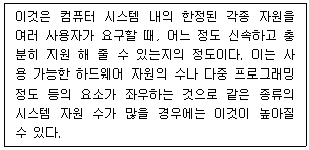
- Availability
- Throughput
- Turn around Time
- Reliability
(정답률: 73%)
73. 파일 구조 중 순차 편성에 대한 설명으로 틀린 것은?
- 특정 레코드를 검색할 때, 순차적 검색을 하므로 검색 효율이 높다.
- 대부분의 기억 매체에서 실현 가능하다.
- 주기적으로 처리하는 경우에 시간적으로 속도가 빠르며, 처리비용이 절감된다.
- 순차적으로 실제 데이터만 저장되므로 기억 공간의 활용률이 높다.
(정답률: 55%)
74. 10K 프로그램이 할당될 때 주기억장치 관리기법인 First-fit 방법을 적용할 경우 해당하는 영역은?
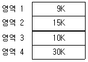
- 영역 1
- 영역 2
- 영역 3
- 영역 4
(정답률: 91%)
75. 운영체제의 주요 기능이 아닌 것은?
- 기억 공간을 할당하고 회수하는 방법을 결정하는 등의 메모리 관리 기능
- 비어있는 공간 관리, 저장 장소 할당 등의 보조기억장치 관리 기능
- 프로세스와 스레드 스케줄링 등의 프로세스 관리 기능
- 원시 프로그램을 기계어 프로그램으로 번역하는 언어 번역 기능
(정답률: 80%)
76. 다음 설명에 해당하는 것은?
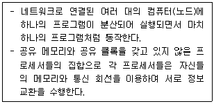
- 트랩 도어
- 분산 시스템
- 다중 프로세서
- 워크스테이션
(정답률: 알수없음)
77. 운영체제의 운영 기법 중 동시에 프로그램을 수행할 수 있는 CPU를 두 개 이상 두고 각각 그 업무를 분담하여 처리할 수 있는 방식을 의미하는 것은?
- 시분할 처리 시스템
- 실시간 처리 시스템
- 다중 처리 시스템
- 다중 프로그래밍 시스템
(정답률: 82%)
78. 분산 시스템의 일반적인 특징이 아닌 것은?
- 자원 공유
- 보안성 향상
- 신뢰성
- 연산 속도 향상
(정답률: 90%)
79. 운영체제가 아닌 것은?
- Prezi
- Windows
- Unix
- Linux
(정답률: 90%)
80. HRN 방식으로 스케줄링 할 경우, 입력된 작업이 다음과 같을 때 우선순위가 가장 높은 것은?
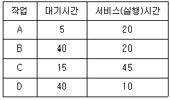
- A
- B
- C
- D
(정답률: 70%)
5과목: 마이크로 전자계산기
81. CPU의 클록 주파수가 2.5MHz이고, 한 개의 명령 사이클이 명령어 인출 및 해독 시 4개의 머신 스테이트가 필요하고 실행 시에는 6개의 머신 스테이트로 이루어진다면 한 개의 명령어를 실행하는데 걸리는 시간은?
- 40㎲
- 25㎲
- 4㎲
- 0.4㎲
(정답률: 50%)
82. 마이크로컴퓨터에서 병렬 입출력 인터페이스가 아닌 것은?
- PIO
- PPI
- ACIA
- PIA
(정답률: 80%)
83. 부트스트랩핑 로더(bootstrapping loader)가 하는 일은?
- 명령어를 해석한다.
- 시스템을 효율적으로 사용할 수 있게 한다.
- 모든 주변장치를 초기화한다.
- 컴퓨터 가동 시 운영체제를 주기억장치로 읽어온다.
(정답률: 82%)
84. 마이크로프로그램 제어 방식의 장점이 아닌 것은?
- 마이크로컴퓨터 개발이 용이하다.
- 원가를 절감시킬 수 있다.
- 새로운 명령어를 쉽게 추가할 수 있다.
- 하드와이어드 방식에 비해 속도가 빠르다.
(정답률: 64%)
85. 다음 메모리 소자 중 휘발성 메모리 소자는?
- ROM
- RAM
- PLA
- Bubble memory
(정답률: 73%)
86. 마이크로컴퓨터에서 자주 이용되는 표준화된 버스 중 성격이 다른 것은?
- S-100 bus
- Multi-bus
- RS-232C
- IEEE-488
(정답률: 70%)
87. 양방향성(bidirectional) 버스는?
- 주소 버스
- 제어신호 버스
- ALU 버스
- 데이터 버스
(정답률: 47%)
88. Compare Accumulator With L이라는 명령어 수행 후의 변화에 대한 설명으로 옳은 것은? (단, L은 범용레지스터 중의 하나이다.)
- 컨디션 코드의 해당비트만 셋 또는 리셋
- accumulator와 컨디션 코드의 해당비트가 변화
- accumulator는 변화하지만 컨디션 코드는 불변
- accumulator와 L 레지스터 컨디션 코드 모두 변화
(정답률: 60%)
89. 램프를 순차적으로 구동시키기 위한 지연루프(Delay Loop)가 아래 그림에 표시되었다. 명령어 수행시간을 고려할 때 1sec의 지연시간을 갖기 위한 N의 값은? (단, N은 16진수이며, 각 명령어의 수행시간은 아래 표와 같다.)
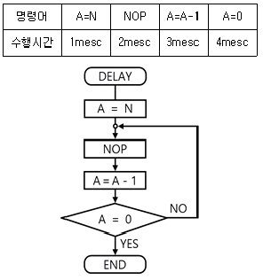
- 66
- 6F
- 77
- 7E
(정답률: 알수없음)
90. 프로그램 크기가 가장 작은 명령어 형식은?
- 0-주소 형식
- 1-주소 형식
- 2-주소 형식
- 3-주소 형식
(정답률: 30%)
91. 서브루틴을 수행하기 위해 사용되는 것은?
- Stack
- Queue
- Linked list
- Array
(정답률: 70%)
92. 1K×1 비트 용량의 RAM에 사용되는 어드레스 디코더의 입력 어드레스 라인의 개수는?
- 10
- 9
- 8
- 7
(정답률: 70%)
93. 분기(Branch) 인스트럭션은 어떤 종류에 속하는가?
- Data transfer
- Data manipulation
- Program manipulation
- Input and Output
(정답률: 55%)
94. 마이크로프로세서의 내부 레지스터인 PC(Program Counter)의 기능은?
- 다음에 실행할 명령어의 주소를 기억한다.
- 현재 실행 중인 명령어의 주소를 기억한다.
- 프로그램 실행 중 읽어 들인 자료의 개수를 셈한다.
- 현재 읽어 들일 자료가 기억된 주소를 기억한다.
(정답률: 70%)
95. JTAG(Joint Test Action Group) 인터페이스에서 핀으로 칩 안에 구성되지 않는 것은?
- TMS(모드)
- TTS(전송)
- TRST(리셋)
- TDI(데이터 입력)
(정답률: 50%)
96. 다음 중 메모리 맵(memory mapped)형 입출력 장치의 설명으로 틀린 것은?
- 입출력 포트를 다루기 위한 인스트력션이 따로 있다.
- 메모리의 번지를 I/O 인터페이스 레지스터까지 확장하여 지정한다.
- 메모리에 대한 제어신호만 필요하고, 메모리와 입출력 번지 사이의 구분은 없다.
- I/O 인터페이스를 지정하는 번지는 메모리 번지를 이용하므로 메모리 용량의 감소를 가져온다.
(정답률: 알수없음)
97. DMA의 입출력 방식과 가장 관계가 없는 것은?
- DMA 제어기가 필요하다.
- CPU의 계속적인 간섭이 필요하다.
- 비교적 속도가 빠른 입출력 방식이다.
- 기억장치와 주변장치 사이에 직접적인 자료 전송을 제공한다.
(정답률: 80%)
98. 다음 중 단항(unary) 연산인 것은?
- AND
- OR
- XOR
- MOVE
(정답률: 90%)
99. 기억장치 사이클 타임(Mt)과 기억장치 접근 시간(At)의 관계식으로 가장 옳은 것은?
- Mt = At
- Mt ≥ At
- Mt ＜ At
- Mt ＞ At
(정답률: 70%)
100. two-pass 어셈블러의 second pass에서 수행하는 일로 가장 적절하지 않은 것은?
- object code를 생성한다.
- symbol table을 작성한다.
- source와 object code의 리스트를 작성한다.
- error list를 작성한다.
(정답률: 30%)